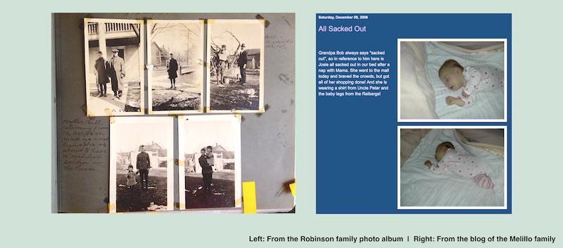

For the past century, photo albums and shoe-boxes have been filled with snapshots that were then passed on from generation to generation. These albums have preserved family genealogy through images, providing glimpses into the past commenting on the legacy of family and culture.
However, in the past decade, the shoe-boxes have been traded for pixels, the albums for Facebook, Instagram, and Flickr. Although family photographs were once carefully cared for and curated, often only viewed by a handful of people, today, these images can be accessed instantly and worldwide. Children now grow up with a detailed account of their entire lives, with every moment able to be liked and viewed by the masses.
Family photography has been a prevalent part of society for preserving and recording history for the past century, and the digital era is disrupting that in ways that are still yet to be seen.
Archived comes from that disruption.
As photography and our entire way of documentation is undergoing rapid changes with the digital form, it is imperative that we begin to try and understand the ramifications that this new form is having.
Archived consists of three collections of family photographs spanning 100 years of American history. It looks at the similarities and themes throughout the images.
The aim for this project is threefold: to allow people to explore the history of family photography, to highlight the importance of preseving and archiving personal materials, and to think about how identity and memory are influenced by images over time.
Many of the photos are strikingly similar, with the subjects displaying almost identical behaviors despite it being a different family, time, place and medium.
These extraordinary similarities both thematically and visually between the photographs across the collection suggest that there is an idealization within family photography, showing our human desire to belong and fit into societal norms. Common themes included children, holidays, and vacations.
The photos are reflective of technology at that time and subsequently is indicative by subject matter. For example, the first photos taken indoors didnt appear until the late 20th century, presumably because of limitations within cameras.
While all of the information did not make it into the final website, each photograph can be read like a clue showing the culture of the time in which the images were taken. Examples of this are the hairstyles, clothing, and cars that change throughout the images, even while the content matter might not.
There are cyclical patterns, most obviously noted in the captioning. Throughout the 20th century, captions shifted from being very detailed in an album, to scribbles on the back of photographs, and today, into blog posts with descriptive and long captions again.

Ultimately, while family photos are less private and more prevasive, the concept of the family photo album still exists- the definition just needs to be redefined. Family albums are becoming more public as our entire existence is becoming less insular, and with that shift, family photos are being used less for preservation and more of identity creation
Lexi Namer is a visual storyteller and interactive designer living in North Carolina. She is interested in the intersections of journalism, technology, and the digital humanities. This project was created for her master’s thesis at the University of North Carolina School of Media and Journalism.
Lexi is currently the UI Design Instructor at The Iron Yard in Raleigh.